Traduction automatique
Cet article a été traduit automatiquement depuis la version originale en anglais.
Ingénierie du contexte pour les agents IA : fenêtres de contexte, mémoire, outils et garde-fous
Résumé
L’ingénierie du contexte correspond au processus qui détermine ce que le modèle voit au moment de prendre une décision : instructions, exemples, connaissances, mémoire, compétences, outils et garde-fous. La plupart des agents en environnement de production fonctionnent correctement ou échouent précisément à ce niveau. Ci-dessous se trouve le schéma que j’utilise systématiquement, accompagné des patterns que j’applique réellement.
Un même agent qui réussit brillamment une démonstration de 30 minutes peut cesser de fonctionner dès le troisième jour en production. Presque toujours, l’échec n’a rien à voir avec le modèle lui-même, mais tout avec le contenu du contexte au moment où il a pris la mauvaise décision : une mémoire obsolète, un document devenu irrelevante, une description d’outil dépassée ou des instructions trop vagues.
L’ingénierie du contexte consiste donc à empêcher cela en concevant intentionnellement ce que le modèle verra avant chaque décision, en respectant des contraintes précises. Cet article présente les patterns que j’emploie pour ce faire.
Pourquoi l’ingénierie du contexte est cruciale pour les agents IA
Un agent de support client fonctionne pendant trois semaines et gère 200 tickets. Par la suite, il commence à générer des détails de produits fictifs, à confondre les clients et à appeler les API incorrectes. Le modèle en lui-même n’a pas empiré ; c’est le contexte qui l’a fait.
Quatre éléments ont changé en 2025, ce qui rend la situation plus problématique qu’auparavant. Les agents ont cessé d’être des chatbots pour commencer à effectuer des actions, ce qui signifie qu’une mauvaise décision concernant le contexte peut avoir des conséquences sur tout un plan composé de dix étapes au lieu de se limiter à une seule réponse erronée. La mémoire centralisée et des normes comme MCP permettent de charger du contexte personnel de manière sécurisée, mais uniquement si la couche correspondante est correctement conçue — sans gouvernance adéquate, des données personnelles sensibles peuvent être divulguées ou des erreurs graves survenir. La récupération hybride, le réclassement des résultats et la récupération basée sur les graphes se sont tous perfectionnés, ce qui réduit les hallucinations et la consommation de tokens, à condition que les requêtes soient bien orientées vers la stratégie appropriée. De plus, la plupart des projets pilotes d’agents qui stagnent le font en raison d’un manque de conception du contexte et de gouvernance, et non en raison de la qualité du modèle. Une couche de contexte bien pensée est ce qui permet de débloquer ces problèmes.
Concepts clés pour les débutants
Quelques termes qui reviennent fréquemment dans cet article :
- Fenêtre de contexte : la mémoire de travail du modèle. Quantité maximale de texte (en tokens) qu’il peut prendre en compte pour une seule décision. Si cette limite est dépassée, le modèle plante ou oublie les parties initiales.
- Tokens : unité dans laquelle le texte est divisé. Environ 1 000 tokens équivalent à 750 mots.
- Budget d’attention : les modèles de langage prêtent attention à chaque paire de tokens ; donc, pour n tokens, il existe n² relations. À mesure que le contexte s’agrandit, ce budget diminue, ce qui fait que les tokens intermédiaires sont moins pris en compte par rapport aux extrémités.
- Embeddings : représentations numériques du texte. Ils permettent de rechercher selon le sens, de sorte qu’une requête pour « chien » peut retrouver « chiot ».
- JSON Schema : méthode standard pour décrire la structure des données JSON. On l’utilise pour obliger le modèle à générer des champs spécifiques, tels que
{"answer": "...", "citations": [...]}. - MCP (Model Context Protocol) : une norme ouverte qui permet aux modèles d’IA de communiquer avec des données et des outils externes via une interface commune. Pensez-y comme à un port USB permettant de relier un agent à vos fichiers locaux, bases de données ou Slack.
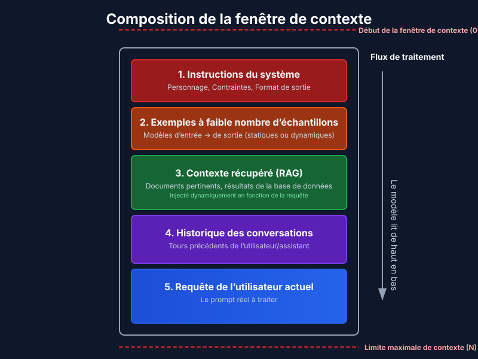
Qu’est-ce que la couche de contexte ?
Un pipeline associé à une politique qui sélectionne et structure les entrées à chaque étape, applique des contrôles (format, sécurité, politiques) et fournit au modèle un contexte suffisant et en temps opportun.
Pensez-y comme une chaîne de montage qui prépare précisément ce dont le modèle a besoin pour prendre une bonne décision.
Le contexte constitue une ressource finie. Les modèles, tout comme les humains dotés d’une mémoire de travail limitée, disposent d’un budget d’attention qui s’épuise à mesure que le contexte s’agrandit. Chaque nouveau token consomme une partie de ce budget. Le défi technique consiste à identifier l’ensemble le plus restreint de tokens à forte signification permettant d’obtenir la réponse souhaitée.
Il n’existe pas de décomposition canonique unique — différentes équipes utilisent des architectures variées. Celle que j’emploie se présente comme suit :
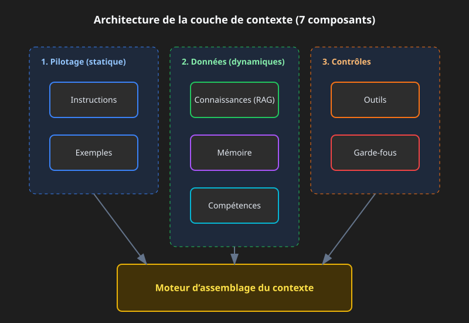
1) Instructions
Un contrat robuste définissant le comportement : rôle, ton, contraintes, schéma de sortie, objectifs d’évaluation. Les modèles modernes respectent les hiérarchies d’instructions (système > développeur > utilisateur) ; il convient donc d’utiliser explicitement cette hiérarchie plutôt que de regrouper tout le contenu en un seul bloc.
Vous avez recours à des instructions lorsque vous nécessitez une sortie cohérente (rapports, requêtes SQL, appels API, JSON) ou lorsque vous devez appliquer des politiques — c’est-à-dire masquer les données personnelles identifiables, refuser les demandes concernant des fonctionnalités non prises en charge, et éviter systématiquement d’inclure des URL internes. Les approches efficaces en pratique sont évidentes : séparer les blocs relatifs aux politiques des tâches effectuées par l’utilisateur, faire en sorte que le code ultérieur soit déterministe grâce aux schémas JSON, et distinguer les messages destinés au système, au développeur et à l’utilisateur afin que le modèle sache quelle voix chaque instruction représente.
Exemple simple de bloc de politique :
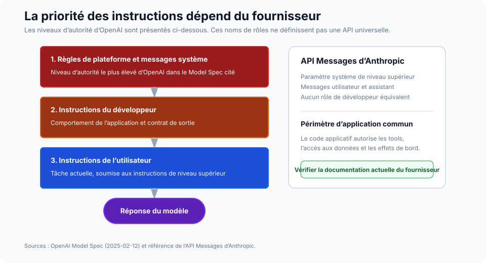
SYSTEM RULES
- Role: support assistant for ACME.
- Always output valid JSON per AnswerSchema.
- If a request needs account data, ask for the account ID.
- Never include secrets or internal URLs.
Raisonnement guidé par un schéma (SGR)
La mise à niveau la plus utile pour « donner des instructions au modèle » consiste à rendre ces instructions structurées. Dirigez l’agent à l’aide de schémas JSON décrivant le plan, les arguments des outils, les résultats intermédiaires ainsi que la réponse finale. Le modèle émet et consomme du JSON à chaque étape, et votre code le valide avant toute autre action. Cela réduit l’ambiguïté, rend les tentatives de répétition déterministes et améliore la sécurité, car les types et les champs obligatoires sont contrôlés tout au long du cycle.
Le flux est simple. Définissez des schémas pour Plan, ToolArgs, StepResult, et FinalAnswer. À chaque étape, le modèle génère un JSON correspondant à l’un d’eux. Votre code effectue la validation. Si celle-ci échoue, tentez une correction automatique (par exemple, remplissez les champs requis manquants par des valeurs par défaut raisonnables). Si la correction échoue, refusez l’opération et enregistrez l’événement.
{
"action": "call_tool",
"tool": "search_tickets",
"args": { "customer_id": "A-123", "limit": 10 },
"expected_schema": "TicketList"
}
et votre code effectue la validation args conformément au schéma de l’outil avant d’appeler l’API.
2) Exemples
Quelques paires entrée-sortie courtes qui illustrent le format exact, le ton et les étapes que le modèle doit suivre. Recourrez aux exemples lorsque vous avez besoin d’un modèle spécifique (tableaux, JSON, SQL, appels API) ou lorsque vous souhaitez des formulations propres à un domaine donné ainsi qu’un ton cohérent.
Quelques règles que je réapprends constamment. Montrez la structure cible exacte dans votre démonstration canonique, et non une paraphrase de celle-ci. Associez de bons exemples à de mauvais exemples : contraster une erreur typique avec le résultat souhaité enseigne davantage que deux exemples corrects. Associez votre schéma JSON à deux ou trois démonstrations courtes plutôt qu’à une seule longue. Et gardez-les courtes : de nombreuses démonstrations petites et ciblées l’emportent presque toujours sur un seul exemple étendu.
3) Connaissances
Ancre du modèle dans des faits externes : récupération vectorielle et par mots-clés, réclassement, requêtes graphiques, récupération de données depuis le Web, sources d’entreprise. Vous avez besoin de cela lorsque le modèle ne peut pas obtenir la réponse à partir de ses poids — faits nouveaux, faits privés, ou tout ce qui nécessite une citation.
La pile de récupération à privilégier est hybride (BM25 associé à une méthode dense), complétée par un mécanisme de réclassement pour réduire la consommation en tokens. Recourez à la récupération consciente des graphes (GraphRAG) lorsque la réponse exige de croiser plusieurs documents, et à un RAG adaptatif lorsque un type de requête ne convient pas à tous les cas — parfois vous ne souhaitez aucune récupération, parfois une seule tentative, parfois un cycle itératif.
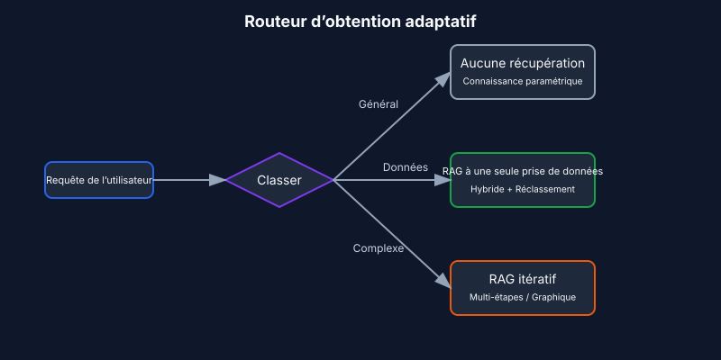
Les paramètres qui influencent réellement la qualité sont plus faibles que ce que suggèrent les études existantes. Divisez le texte en blocs selon des frontières sémantiques (paragraphes, sections) plutôt qu’en fonction d’une taille fixe — c’est cette décision qui détermine directement la qualité de la récupération des informations dans des documents réels. Commencez avec un seuil top-k compris entre 10 et 20 pour les approches hybrides, puis réduisez ce chiffre à 3 à 5. Utilisez MMR avec une valeur de λ d’environ 0,7 par défaut afin d’assurer la diversité des résultats. Et incluez toujours des références sources ainsi que des citations directes dans vos résultats, non pas parce que le modèle pourrait générer des erreurs sans elles, mais parce qu’elles permettent de vérifier l’exactitude des réponses.
4) Mémoire
Un contexte durable à travers les tours de dialogue et les sessions. La mémoire à court terme conserve l’état de la conversation. La mémoire à long terme stocke les informations relatives aux utilisateurs et à l’application. La mémoire épisodique conserve les événements. La mémoire sémantique conserve les entités. Utilisez ces mémoires lorsque vous souhaitez une personnalisation et une continuité, ou lorsque plusieurs agents doivent coordonner leurs actions sur plusieurs jours ou semaines.
Les schémas qui survivent en environnement de production sont : des mémoires d’entités (noms, identifiants, préférences) dotées de politiques d’expiration explicites ; un accès ciblé à une base de données à long terme basée sur des vecteurs, des paires clé-valeur ou un graphe ; ainsi que le lien entre la mémoire et la compression, de manière à ce que, lorsque la mémoire à court terme devient trop volumineuse, elle soit résumée plutôt que tronquée. La partie relative au résumage est abordée dans Stratégies de compression de contexte [7].
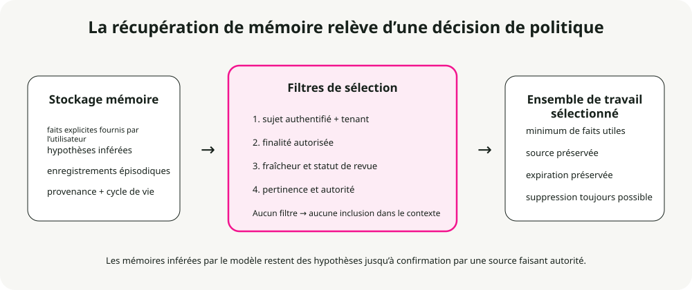
La politique de durée de validité que j’applique par défaut :
- Préférences : 365 jours.
- Événements épisodiques : 90 jours.
- État à court terme : effacé à la fin de la session.
- Entités : pas de durée de validité définie, mais nécessitent une validation périodique.
5) Compétences
Des expertises sectorielles composables que les agents peuvent découvrir et charger sur demande. Celles d’Anthropic Compétences de l’agent Le framework constitue la conception de référence permettant de capturer des connaissances procédurales et de les partager entre des agents.
Créer une compétence pour un agent revient à élaborer un guide d’intégration destiné à un nouvel employé. — Anthropic Engineering Blog
Vous avez besoin de compétences lorsque vous requérez des expertises sectorielles spécifiques (manipulation de PDF, git, analyse de données), lorsque vous souhaitez disposer de procédures réutilisables au sein d’agents ou d’organisations, ou encore lorsque vous voulez spécialiser un agent sans coder manuellement des comportements dans le prompt du système.
Qu’est-ce qu’une compétence ?
Une compétence est un dossier organisé contenant des instructions, des scripts et des ressources que l’agent peut découvrir et charger selon le contexte :
- Un
SKILL.mdfichier contenant un nom, une description (dans le frontmatter YAML) ainsi que les instructions relatives à la compétence. – Fichiers supplémentaires — références, modèles — que la compétence peut intégrer. – Code : Python ou d’autres exécutables que l’agent peut lancer en tant qu’outils.
Modèle de compétences : divulgation progressive
Le principe qui permet aux compétences de s’adapter est la divulgation progressive : ne charger les informations qu’en cas de besoin. (Voir Le principe de divulgation progressive voir ci-dessous pour la version générale.) Lors du démarrage, seuls les noms et les descriptions des compétences sont disponibles dans le contexte — ce qui suffit à ce que l’agent sache ce qui est accessible. Le fichier SKILL.md complet n’est chargé qu’une fois que la compétence est activée. Les fichiers référencés de manière plus profonde ne sont chargés que lorsque la compétence activée en a besoin.
Cela signifie que le contenu des compétences est en pratique illimité : l’agent ne paie pas de coût de contexte pour ce qu’il n’utilise pas.
┌─────────────────────────────────────────────────────────┐
│ Context Window │
├─────────────────────────────────────────────────────────┤
│ System Prompt │
│ ├── Core instructions │
│ └── Skill metadata (name + description only) │
│ • pdf: "Manipulate PDF documents" │
│ • git: "Advanced git operations" │
│ • context-compression: "Manage long sessions" │
├─────────────────────────────────────────────────────────┤
│ [User triggers task requiring PDF skill] │
│ │
│ → Agent reads pdf/SKILL.md into context │
│ → Agent reads pdf/forms.md (only if filling forms) │
│ → Agent executes pdf/extract_fields.py (without loading)│
└─────────────────────────────────────────────────────────┘
Bonnes pratiques pour les compétences
Les directives d’Anthropic se résument à quatre points. Commencez par l’évaluation : exécutez l’agent sur des tâches représentatives, identifiez les lacunes, et créez des compétences pour les combler. Structurez pour l’échelle : divisez une grande SKILL.md Placer ces compétences dans des fichiers distincts et conserver des chemins séparés lorsque les contextes sont mutuellement exclusifs. Observez comment l’agent utilise vos compétences et itérez sur les noms ainsi que les descriptions jusqu’à ce que le taux de précision des déclenchements soit élevé. Laissez également l’agent vous aider : demandez à Claude de capturer les approches réussies afin de les transformer en contenus de compétences réutilisables.
Considérations de sécurité
Par définition, les compétences introduisent des vulnérabilités — elles confèrent à l’agent de nouvelles capacités via des instructions et du code. Installez-les uniquement à partir de sources fiables. Effectuez un audit avant utilisation, en prenant en compte les fichiers inclus, les dépendances de code ainsi que toutes les connexions réseau. Prêtez une attention particulière aux instructions qui relient la compétence à des services externes, car c’est généralement là que commence l’exfiltration de données.
6) Outils
Appels de fonction permettant de récupérer des données ou d’effectuer des actions : API, bases de données, recherche, opérations sur fichiers, utilisation du système informatique. Vous avez besoin d’outils lorsque vous nécessitez des effets secondaires déterministes et une fiabilité des données, ou lorsqu’organisez des boucles de type planer-appeler-vérifier-poursuivre.
Les schémas que j’emploie par défaut consistent en une planification basée d’abord sur les outils, suivie de validateurs après chaque appel, des sorties structurées entre les étapes, ainsi que des mécanismes de secours explicites en cas d’échec des outils (reprise automatique, puis fonctionnement en mode dégradé, enfin intervention humaine).
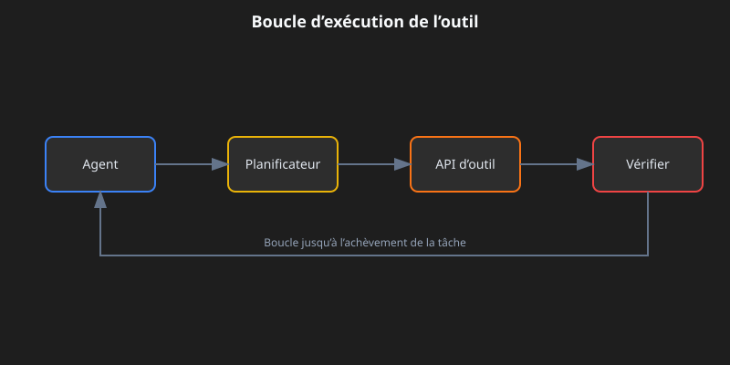
Trois concepts sur lesquels il est important d’être précis. Un opérateur idempotent signifie qu’il peut être exécuté à nouveau sans effets secondaires (GET : oui, POST ou DELETE : non). Les postconditions représentent les vérifications effectuées après chaque appel : résultat non vide, statut égal à « ok », JSON valide. La chaîne de secours définit l’ordre de réaction en cas de problème : tentative de redémarrage, puis fonctionnement en mode dégradé, et enfin transmission de l’incident à un humain.
Une remarque sur MCP
MCP devient la norme pour la manière dont les agents se connectent aux outils et aux données [6]. Au lieu d’écrire un wrapper API personnalisé pour chaque service, vous exécutez un serveur MCP pour chacun d’eux, permettant à l’agent de découvrir automatiquement les outils et ressources disponibles.
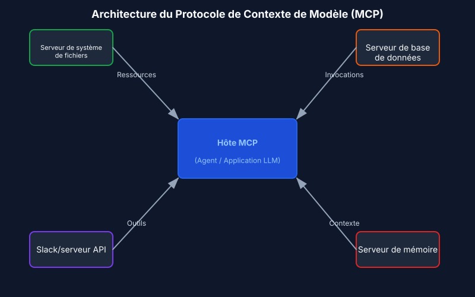
7) Garde-fous
Validation des entrées et des sorties, filtres de sécurité, protection contre les jailbreak, application des schémas, politique de contenu. Vous avez besoin de garde-fous lorsque vous exigez le respect des réglementations ou l’intégrité de la marque, ainsi que pour obtenir des sorties correctement typées et un comportement sécurisé.
La structure qui tient la route en production : des garde-fous programmables (règles de politique associées à des actions), des validateurs de schéma et sémantiques (types, expressions régulières, évaluations), ainsi qu’une politique centrale intégrant des outils d’observabilité (tableaux de bord, tests de pénétration).
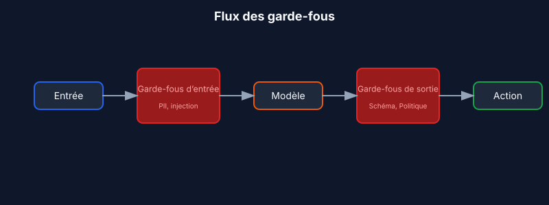
Lorsque l’on doit choisir entre réparer ou refuser une demande, c’est souvent cette décision qui est prise à tort par les équipes. En cas de violation du schéma, une tentative de réparation automatique est effectuée ; si celle-ci échoue, il convient de refuser la demande en indiquant une erreur claire. Pour les violations des politiques, on évite complètement toute tentative de réparation : il faut refuser immédiatement et proposer une alternative sûre.
Quatre types courants de mécanismes de protection couvrent la plupart des besoins en environnement de production. Les gardes d’entrée détectent les données personnelles identifiables, les injections de requêtes et le contenu toxique avant que le modèle ne les prenne en charge. Les gardes de sortie assurent le respect du schéma, des politiques de contenu ainsi que de la cohérence factuelle. Les gardes liés aux outils gèrent la limitation des débits, les vérifications d’autorisation et les seuils de coût. Enfin, les gardes de mémoire masquent les données personnelles identifiables avant leur stockage et imposent une date d’expiration.
Exemple concret : un bot de support répondant à une demande
Voici ce que la couche de contexte assemble lorsque un client demande : « Pourquoi ma clé API ne fonctionne-t-elle pas ? » :
- Instructions : jouer le rôle d’un assistant de support compétent pour ACME, citer les sources, retourner du JSON
{answer, sources, next_steps}- Exemples : deux paires courtes type question-réponse illustrant le ton et la structure JSON, l’une concernant les clés API, l’autre les facturations. - Connaissances : rechercher dans le centre d’aide ainsi que dans les guides de fonctionnement du produit les termes « API key troubleshooting » ; inclure les extraits pertinents.
- Mémoire : nom du client « Sam », identifiant de compte « A-123 », forfait « Pro », dernière interaction « Clé API créée il y a 3 jours ».
- Compétences : charger le
ticket-handlingCompétences en matière de procédures de dépannage, de politiques d’escalade et de modèles de résolution. - Outils :
search_tickets(customer_id),check_api_key_status(key),create_issue(description). - Contraintes de sécurité : masquer les valeurs des clés API dans les résultats ; en cas d’échec du schéma, corriger une seule fois ; en cas de violation des politiques (par exemple, une demande de suppression de données en production), refuser poliment.
Le modèle reçoit tout ce contexte structuré, génère une réponse, et les contraintes de sécurité la valident avant qu’elle ne soit renvoyée au client.
Analyse approfondie des fondements du contexte
Avant que les schémas de comportement ne deviennent compréhensibles, il est nécessaire de maîtriser leur structure interne.
L’anatomie du contexte
Le contexte se compose de plusieurs composants distincts, chacun présentant des caractéristiques et des contraintes différentes.
Les prompts système définissent l’identité de l’agent, ses contraintes ainsi que ses directives comportementales. Ils sont chargés une seule fois au début de la session et restent en mémoire tout au long de la conversation. La difficulté réside dans le fait de trouver le bon équilibre : suffisamment spécifiques pour orienter réellement le comportement, mais suffisamment flexibles pour laisser de la marge à l’interprétation. Si les directives sont trop strictes, on obtient des règles rigides et difficiles à modifier. Si elles sont trop générales, le modèle ne dispose d’aucun signal concret sur lequel s’appuyer pour agir.
Organisez les prompts en sections distinctes en utilisant des balises XML ou des en-têtes Markdown :
<BACKGROUND_INFORMATION>
You are a Python expert helping a development team.
Current project: Data processing pipeline in Python 3.9+
</BACKGROUND_INFORMATION>
<INSTRUCTIONS>
- Write clean, idiomatic Python code
- Include type hints for function signatures
- Add docstrings for public functions
</INSTRUCTIONS>
<TOOL_GUIDANCE>
Use bash for shell operations, python for code tasks.
File operations should use pathlib for cross-platform compatibility.
</TOOL_GUIDANCE>
Les définitions d’outils spécifient les actions que l’agent peut effectuer. Chaque outil dispose d’un nom, d’une description, de paramètres et d’un format de retour. Ce sont les descriptions qui guident réellement le comportement de l’agent. Des descriptions insuffisantes le contraignent à deviner ; celles qui sont bonnes incluent un contexte d’utilisation, des exemples ainsi que des valeurs par défaut judicieuses. Le principe de consolidation : si un ingénieur humain ne peut pas déterminer avec certitude quel outil utiliser, l’agent ne fera pas mieux. C’est là le signal pour les fusionner ou les renommer.
Les documents récupérés importent du contenu pertinent dans le contexte en temps de exécution, au lieu de charger tout le contenu à l’avance. Cette approche « juste à temps » permet de conserver des identifiants légers — chemins de fichiers, requêtes stockées, liens web — et de ne charger les données réelles qu’en cas de besoin.
L’historique des messages correspond à la conversation entre l’utilisateur et l’agent, y compris les requêtes précédentes, les réponses et les raisonnements. Pour les tâches longues, il peut devenir si volumineux qu’il occupe presque toute la fenêtre de dialogue. Il sert également de mémoire provisoire, où l’agent suit son avancement et l’état de la tâche.
Les sorties des outils correspondent aux résultats des actions de l’agent : contenus de fichiers, résultats de recherche, sorties de commandes, réponses API. Dans les trajectoires typiques des agents, les observations représentent généralement plus de 80 % du contexte total. [4]. Ce chiffre représente la pression exercée par des techniques telles que le masquage des observations et la compactation.
Fenêtres de contexte et mécanismes d’attention
Les modèles de langage calculent l’attention en déterminant les relations entre chaque paire de tokens. Pour n tokens, cela correspond à n² relations. À mesure que le contexte s’agrandit, la capacité du modèle à prendre en compte ces relations diminue progressivement.
Les modèles adoptent également leurs schémas d’attention à partir des données d’entraînement, qui sont majoritairement composées de séquences plus courtes. Par conséquent, le modèle dispose d’une expérience relativement limitée en matière de dépendances à l’échelle du contexte. Le résultat final est un budget d’attention qui s’épuise à mesure que le contexte s’élargit.
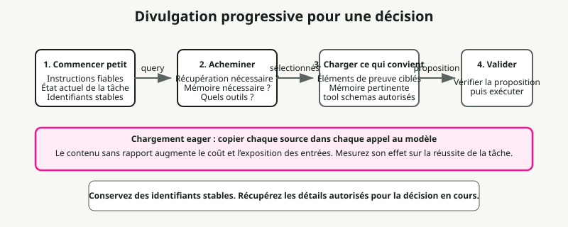
Le principe de divulgation progressive
La divulgation progressive permet de gérer efficacement le contexte en ne chargeant les informations que lorsque c’est nécessaire. Lors du démarrage, les agents ne chargent que les noms et les descriptions des compétences — ce qui suffit pour déterminer si une compétence peut être pertinente. Le contenu complet n’est chargé qu’une fois que l’agent est activé pour des tâches spécifiques.
# Instead of loading all documentation at once:
# Step 1: Load summary
docs/api_summary.md # Lightweight overview
# Step 2: Load specific section as needed
docs/api/endpoints.md # Only when API calls needed
docs/api/authentication.md # Only when auth context needed
Qualité du contexte versus quantité
L’hypothèse selon laquelle des fenêtres de contexte plus grandes résolvent les problèmes de mémoire a été réfutée par des données empiriques. L’ingénierie du contexte consiste à identifier l’ensemble le plus restreint possible de tokens à forte signification.
Plusieurs facteurs poussent à viser l’efficacité. Le coût de traitement augmente de manière disproportionnée avec la longueur du contexte : il ne double pas simplement pour doubler le nombre de tokens, mais croît de façon exponentielle en termes de temps et de ressources informatiques. Les performances du modèle se détériorent au-delà d’une certaine longueur de contexte, même lorsque la fenêtre technique permettrait d’en gérer davantage. De plus, les entrées longues restent coûteuses, même avec le cacheage des préfixes.
Le principe directeur est l’informativité plutôt que l’exhaustivité : il convient d’inclure ce qui est pertinent pour la décision à prendre, et d’exclure ce qui ne l’est pas.
Modèles de dégradation du contexte
Les modèles de langage présentent des schémas de dégradation prévisibles à mesure que le contexte s’allonge. En les connaissant, vous pouvez diagnostiquer les pannes et concevoir des systèmes résilients.
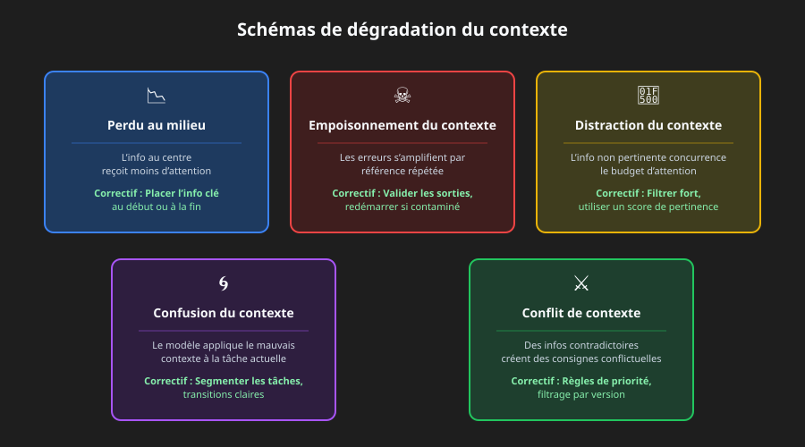
Le phénomène de perte au milieu du trajet
Le modèle de dégradation le mieux documenté est celui du « lost-in-middle », dans lequel les modèles présentent des courbes d’attention en forme de U. [1]. Les informations situées au début et à la fin du contexte reçoivent une attention fiable ; en revanche, les informations se trouvant au milieu présentent une précision de rappel inférieure de 10 à 40 %.
Le mécanisme est concret : les modèles allouent une attention importante au premier token (souvent le token BOS) afin de stabiliser leurs états internes, ce qui crée un « puits d’attention » qui consomme le budget d’attention disponible. [2]. À mesure que le contexte s’agrandit, les tokens intermédiaires ne parviennent pas à obtenir un poids d’attention suffisant.
La solution pratique consiste à placer les informations critiques au début ou à la fin du contexte. Utilisez des structures de résumé qui mettent en évidence les informations clés dans des positions favorisées par l’attention.
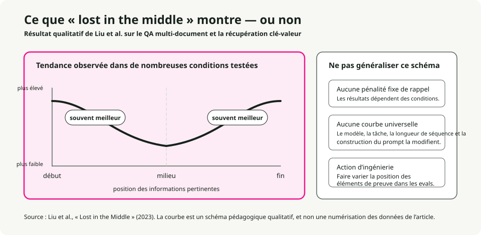
# Organize context with critical info at edges
[CURRENT TASK] # At start
- Goal: Generate quarterly report
- Deadline: End of week
[DETAILED CONTEXT] # Middle (less attention)
- 50 pages of data
- Multiple analysis sections
- Supporting evidence
[KEY FINDINGS] # At end
- Revenue up 15%
- Costs down 8%
- Growth in Region A
Pour les instructions que vous ne pouvez absolument pas vous permettre de perdre, dupliquez-les tant au début qu’à la fin. Étant donné que les modèles prêtent une grande attention aux deux extrémités, la même instruction placée dans ces deux positions attire leur attention indépendamment de la longueur du contexte. C’est la solution idéale pour les contraintes système qui doivent toujours être respectées, les exigences de format de sortie et les politiques de sécurité.
# Example: Duplicating critical instructions
[SYSTEM - START]
CRITICAL: Always respond in JSON format. Never include PII.
[... long context with documents, history, tools ...]
[SYSTEM - REMINDER]
CRITICAL: Always respond in JSON format. Never include PII.
Empoisonnement du contexte
Le poisonage du contexte se produit lorsque des hallucinations, des erreurs ou des informations incorrectes pénètrent dans ce dernier et s’accumulent au fil de références répétées. Une fois contaminé, le contexte crée des boucles de rétroaction qui renforcent la croyance erronée.
Il survient généralement par l’une de trois voies : des sorties d’outils contenant des erreurs ou des formats inattendus, des documents récupérés présentant des informations fausses ou obsolètes, ainsi que des résumés générés par le modèle qui introduisent des hallucinations puis persistent.
On le détecte à travers des symptômes tels qu’une dégradation de la qualité des résultats sur des tâches qui fonctionnaient auparavant, des agents qui utilisent les mauvais outils ou les mauvais paramètres, ainsi que des hallucinations persistantes qui résistent aux tentatives de correction.
La récupération est mécanique : il suffit de tronquer le contexte avant le point de contamination, d’indiquer explicitement cette contamination et de demander une réévaluation, ou bien de recommencer avec un contexte propre ne conservant que les informations vérifiées.
Distraction du contexte
La distraction due au contexte apparaît lorsque celui-ci devient trop long, ce qui pousse le modèle à se concentrer excessivement sur les informations fournies, au détriment de ce qu’il a appris lors de son entraînement. Des recherches montrent qu’un seul document irrelevant suffit à dégrader les performances sur des tâches impliquant des documents pertinents. [8]. L’effet suit une fonction à étapes : la présence de tout élément perturbateur déclenche une dégradation.
La réflexion clé : les modèles ne peuvent pas ignorer un contexte irrelevante. Ils doivent prêter attention à tout ce qui leur est fourni, et cette attention même constitue une source de perturbation, même lorsque les informations irrélevantes sont clairement inutiles.
Les solutions consistent en un filtrage de pertinence avant le chargement des documents, en une organisation hiérarchique des noms afin de faciliter l’ignorance des sections irrelevantes, ainsi qu’en une question pour déterminer si une information doit absolument figurer dans le contexte ou peut être obtenue via une appel d’outil.
Confusion de contexte
La confusion de contexte se produit lorsque des informations irrelevantes influencent les réponses de manière à en dégrader la qualité. Lorsque l’on inclut quelque chose dans le contexte, le modèle doit y prêter attention, ce qui lui permet d’intégrer des informations inutiles, d’utiliser des définitions d’outil destinées à une tâche différente, ou d’appliquer des contraintes provenant d’un autre contexte.
Signes à surveiller : des réponses qui abordent le mauvais aspect de la requête, des appels d’outil qui semblent appropriés pour une tâche différente, des résultats mélangeant des exigences provenant de plusieurs sources.
La solution réside dans une segmentation explicite des tâches (chacune recevant sa propre fenêtre de contexte), des transitions claires entre les contextes, ainsi que dans une gestion de l’état qui isole chaque contexte.
Conflit de contextes
Un conflit de contexte se produit lorsque des informations accumulées entrent en contradiction directe, générant des directives opposées. Cela diffère du phénomène de « poisoning », où une seule donnée est erronée ; dans un conflit, plusieurs données correctes s’opposent entre elles.
Les causes fréquentes incluent la récupération d’informations à partir de multiples sources contenant des données contradictoires, les conflits de version (présence à la fois d’informations obsolètes et actuelles dans le contexte), ainsi que les conflits de perspective (points de vue valables mais incompatibles).
Ce problème peut être résolu grâce à une marquage explicite des conflits, à des règles de priorité déterminant quelle source prend le pas, et à un filtrage par version permettant d’exclure les informations obsolètes.
Seuils de dégradation spécifiques au modèle
La recherche fournit des données concrètes indiquant à quel moment commence la dégradation des performances. La longueur effective de contexte — c’est-à-dire celle pour laquelle les modèles conservent une performance optimale — est souvent considérablement inférieure à la valeur maximale annoncée. [3]:
| Modèle | Contexte maximal | Contexte efficace | Notes de dégradation |
|---|---|---|---|
| GPT-4 Turbo | 128 K tokens | ~32 K tokens | La qualité de récupération se dégrade après 32 K, et la précision diminue fortement au-delà de 64 K. |
| GPT-4o | 128 K de tokens | ~8 000 tokens | La précision du NIAH complexe diminue de 99 % à 70 % à 32 K. |
| Claude 3.5 Sonnet | 200 000 tokens | ~4 K tokens | La précision du NIAH complexe diminue de 88 % à 30 % à 32 K. |
| Gemini 1.5 Pro | 1 M de tokens | ~128 K tokens | 99 % de rappel NIAH à 1 million d’éléments, meilleure performance sur des contextes longs |
| Gemini 2.0 Flash | 1 M de tokens | ~32 K tokens | La précision du NIAH complexe diminue de 94 % à 48 % à 32 K. |
Sources : benchmark RULER [3], benchmark NoLiMa [9]— Rapports techniques de Google. [3]: Seuls 50 % des modèles affichant une capacité de contexte de 32 K+ conservent des performances satisfaisantes avec 32 K de tokens. Des scores presque parfaits sur des tests simples du type « aiguille dans une botte de foin » ne se traduisent pas par une véritable compréhension de longs contextes — les tâches de raisonnement complexes présentent en effet une dégradation bien plus marquée.
Stratégies de compression du contexte
Note terminologique : la compression de contexte est un concept englobant la synthèse (pour l’historique des conversations et la mémoire), le masquage des observations (pour les sorties des outils) ainsi que le troncage sélectif. [5]. La synthèse de la mémoire mentionnée dans le Mémoire Cette section illustre une application concrète de ces stratégies de compression plus générales.
Lorsque les sessions d’agent génèrent des millions de tokens d’historique de conversation, la compression cesse d’être optionnelle. L’approche naïve consiste à appliquer une compression agressive afin de réduire au minimum le nombre de tokens par requête. Cependant, l’objectif d’optimisation adéquat est de minimiser le nombre de tokens par tâche. [4]: nombre total de tokens consommés pour accomplir la tâche, y compris les coûts liés aux nouvelles requêtes lorsque la compression entraîne la perte d’informations essentielles.
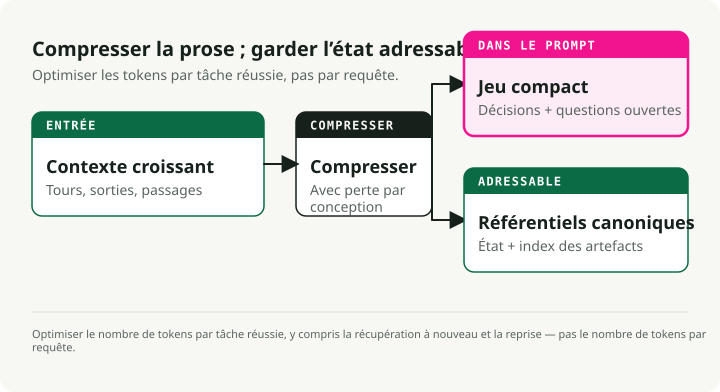
Lorsque la compression est nécessaire
Activez la compression lorsque les sessions des agents dépassent les limites de la fenêtre de contexte, lorsque ces derniers commencent à « oublier » quels fichiers ils ont modifiés, lorsque vous déboguez une longue session de codage s’étalant sur plusieurs heures, ou encore lorsque les performances se détériorent de manière significative au cours de conversations prolongées.
Trois approches prêtes pour le déploiement
La synthèse itérative ancrée permet de conserver un résumé structuré et persistant, comprenant des sections explicites dédiées à l’intention de la session, aux modifications de fichiers, aux décisions prises et aux étapes suivantes. Lorsque la compression est déclenchée, elle ne synthétise que la partie récemment tronquée et l’intègre au résumé existant. Cette méthode fonctionne car la structure impose sa préservation : les sections dédiées agissent comme une liste de contrôle que le synthétiseur doit remplir, ce qui empêche tout écart silencieux.
## Session Intent
Debug 401 Unauthorized error on /api/auth/login despite valid credentials.
## Root Cause
Stale Redis connection in session store. JWT generated correctly but session could not be persisted.
## Files Modified
- auth.controller.ts: No changes (read only)
- config/redis.ts: Fixed connection pooling configuration
- services/session.service.ts: Added retry logic for transient failures
- tests/auth.test.ts: Updated mock setup
## Test Status
14 passing, 2 failing (mock setup issues)
## Next Steps
1. Fix remaining test failures (mock session service)
2. Run full test suite
3. Deploy to staging
La compression opaque produit des représentations compressées optimisées pour la fidélité de reconstruction. Elle permet d’atteindre les taux de compression les plus élevés (99 %+), mais au prix d’une moindre interprétabilité. L’utiliser lorsque l’économie maximale de tokens est cruciale et que la récupération des données est peu coûteuse.
Le résumé complet régénératif génère un résumé structuré détaillé pour chaque opération de compression. La sortie est lisible, mais les détails peuvent se dégrader au fil de cycles de compression répétés.
Comparaison des méthodes de compression**
Recherche menée par Factory.ai [4] Comparaison des stratégies de compression sur des sessions réelles d’agents en production :
| Méthode | Ratio de compression | Score de qualité | Idéal pour |
|---|---|---|---|
| Itération ancrée | 98.6% | 3.70/5 | Séances prolongées, suivi des fichiers |
| Régénératif | 98.7% | 3.44/5 | Éliminer les frontières de phase |
| Opaque | 99.3% | 3.35/5 | Économies maximales, sessions courtes |
Lecture des métriques :
- Taux de compression (98,6 %) : pourcentage de tokens supprimés. Un taux de 98,6 % signifie qu’au sein de 100 000 tokens d’historique, seuls 1 400 restent.
- Score de qualité (3,70/5) : évalué par des tests basés sur des interrogations — après compression, l’agent est soumis à des questions exigeant le rappel de détails spécifiques provenant de l’historique tronqué (quels fichiers avons-nous modifiés, quel était le message d’erreur). Un score de 3,70/5 indique que l’agent a répondu correctement à environ 74 % de ces tests.
- +0,7 % de tokens supplémentaires : en comparant la méthode itérative ancrée (98,6 %) à la méthode opaque (99,3 %), la différence est de 0,7 %. Pour une session de 100 000 tokens, cela correspond à 1 400 tokens contre 700. Ces 700 tokens supplémentaires (0,7 % du total initial) permettent d’obtenir 0,35 point de qualité de plus (3,70 contre 3,35) — ce qui améliore considérablement le rappel des détails essentiels pour l’exécution de la tâche.
Le problème de la trace des artefacts
L’intégrité de la trace des artefacts constitue la dimension la plus faible parmi toutes les méthodes de compression, avec un score compris entre 2,2 et 2,5 sur 5,0. Les agents de codage doivent savoir quels fichiers ils ont créés, modifiés ou lus, et la compression entraîne souvent leur perte.
Recommandation : mettre en place un index distinct des artefacts ou un suivi explicite de l’état des fichiers au sein de la structure de l’agent, en complément de la synthèse générale.
Stratégies de déclenchement de la compression
| Stratégie | Point déclencheur | Équilibre entre performances et coûts |
|---|---|---|
| Seuil fixe | Taux d’utilisation de 70 à 80 % | Simple, mais peut se compresser prématurément |
| Fenêtre glissante | Conserver les derniers N tours + résumé | Taille de contexte prévisible |
| Basé sur l’importance | Compresser en premier les éléments à faible pertinence | Complexe, mais conserve le signal |
| Limite de tâche | Compresser à la fin de la tâche | Résumés clairs, délais imprévisibles |
Évaluation basée sur des sondes
Les métriques traditionnelles telles que ROUGE ne parviennent pas à évaluer la qualité de compression fonctionnelle. Un résumé peut obtenir un score élevé en termes de chevauchement lexical, tout en omettant le chemin de fichier dont l’agent a réellement besoin.
L’évaluation basée sur des sondages mesure directement la qualité en posant des questions après compression :
| Type de sonde | Ce que cela teste | Exemple de question |
|---|---|---|
| Rappel | Rétention des faits | Quel était le message d’erreur initial ? |
| Artefact | Suivi des fichiers | Quels fichiers avons-nous modifiés ? |
| Continuation | Planification des tâches | Que devrions-nous faire ensuite ? |
| Décision | Chaîne de raisonnement | Quelle a été notre décision concernant le problème Redis ? |
Si la compression a permis de conserver les informations pertinentes, l’agent donne une réponse correcte. Sinon, il devine ou produit des hallucinations.
Techniques d’optimisation du contexte
L’optimisation du contexte augmente la capacité effective grâce à la compression, au masquage, au stockage en cache et à la partitionnement. Ces techniques s’appuient sur le Stratégies de compression de contexte Ci-dessus, en les appliquant de manière systématique en environnement de production. Une bonne optimisation peut doubler ou tripler la capacité de contexte efficace sans nécessiter un modèle plus volumineux.
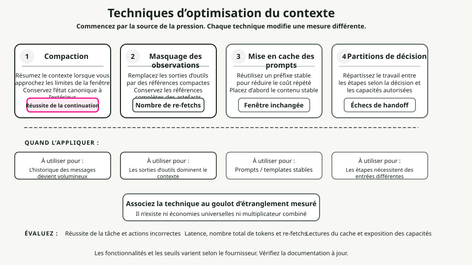
Stratégies de compression
La compression consiste à résumer le contenu du contexte lorsque les limites sont approchées, puis à réinitialiser avec ce résumé. L’objectif est d’extraire l’essentiel du contenu de manière fiable, afin que l’agent puisse continuer à fonctionner avec une dégradation minimale.
L’ordre de priorité que je suive est le suivant : d’abord compresser les sorties des outils (en les remplaçant par des résumés), ensuite les anciennes interactions (en résumant les conversations précédentes), puis les documents récupérés (en les résumant si des versions récentes existent). Il ne faut jamais compresser le prompt système.
Ce qui doit être conservé dépend du type de contenu. Sorties des outils : conserver les résultats, les métriques et les conclusions ; jeter les sorties brutes et verbosité. Interactions conversationnelles : conserver les décisions, les engagements et les changements de contexte ; jeter le contenu superflu. Documents récupérés : conserver les faits et affirmations clés ; jeter les explications supplémentaires.
Masquage des observations
Les sorties des outils peuvent représenter plus de 80 % de l’utilisation des tokens. [4]. Une fois qu’un agent a utilisé la sortie d’une outil pour prendre une décision, conserver l’ensemble de cette sortie apporte une valeur de plus en plus faible.
Une matrice de décision de masquage :
| Catégorie | Action | Raisonnement |
|---|---|---|
| Observations relatives à la tâche en cours | Ne masquez jamais | Essentiel pour le travail en cours |
| Dernière interaction | Ne masquez jamais | Directement pertinent |
| Raisonnement actif | Ne masquez jamais | Réflexion en cours |
| il y a plus de 3 tours | Envisagez le masquage | Butée fonctionnelle probable |
| Sorties répétées | Masquer toujours | Redondant |
| Code de base | Masquer toujours | Signal faible |
Optimisation de la cache KV
La cache KV stocke les tenseurs de clé et de valeur calculés pendant l’inférence. Le mise en cache entre des requêtes présentant des préfixes identiques permet d’éviter de recalculer ces valeurs, ce qui réduit considérablement les coûts et la latence.
Optimisez le système de mise en cache en plaçant en premier les contenus stables :
# Stable content first (cacheable)
context = [system_prompt, tool_definitions]
# Frequently reused elements
context += [reused_templates]
# Unique elements last
context += [unique_content]
Conception pour la stabilité du cache : éviter les contenus dynamiques tels que les timestamps dans les prompts, utiliser un formatage cohérent, et maintenir une structure stable d’une session à l’autre.
Partitionnement du contexte
L’optimisation la plus poussée consiste à répartir le travail entre des sous-agents disposant de contextes isolés. Chaque sous-agent fonctionne dans un contexte propre, axé sur sa sous-tâche, sans retenir de contexte accumulé provenant d’autres sous-tâches.
Pour l’agrégation : valider que toutes les partitions ont été achevées, fusionner les résultats compatibles, et résumer le tout si la sortie combinée reste trop volumineuse.
Cadre de décision pour l’optimisation
Quand optimiser : lorsque l’utilisation du contexte dépasse 70 %, lorsque la qualité des réponses se détériore dans les conversations prolongées, lorsque les coûts augmentent en raison de contextes trop longs, ou lorsque la latence augmente avec la longueur de la conversation.
Ce qui doit être appliqué dépend de l’élément prédominant. Si les sorties des outils dominent, il faut recourir au masquage des observations. Si les documents récupérés dominent, il convient d’utiliser la synthèse ou la partitionnement. Si l’historique des messages domine, une compression associée à une synthèse est nécessaire. Lorsque plusieurs composants sont prédominants, il faut combiner différentes stratégies.
Indicateurs cibles raisonnables : une compression permettant une réduction de 50 à 70 % des tokens avec moins de 5 % de dégradation de qualité ; un masquage entraînant une réduction de 60 à 80 % des observations masquées ; une optimisation du cache assurant un taux de réussite de 70 % ou plus pour des charges de travail stables. AnswerSchema, PlanSchema, StepResultSchema### Étape 2 : choisir une stratégie de récupération
Commencez par une récupération hybride (BM25 associé aux vecteurs) accompagnée d’un réordonneur. Ensuite, orientez le processus en fonction du type de requête. Les connaissances générales ne nécessitent pas de récupération de données. Les faits récents ou privés exigent une approche RAG à un seul essai (hybride + réordonnancement). Les requêtes complexes à plusieurs parties requièrent une méthode RAG itérative (en les décomposant en sous-requêtes).
Étape 3 : concevoir la mémoire
Séparez les données à court terme (état de la conversation) de celles à long terme (facteurs concernant l’utilisateur, historique). Les données à court terme stockent l’état de la conversation ainsi que les derniers échanges, puis sont effacées à la fin de la session. Les données à long terme conservent les entités de l’utilisateur, ses préférences et les événements épisodiques. Définissez des règles d’expiration : 365 jours pour les préférences, 90 jours pour les événements épisodiques, et expiration uniquement à la fin de la session pour les données à court terme. Appliquez une censure des données personnelles identifiables avant de stocker quoi que ce soit.
Étape 4 : spécifier les outils
Définissez des signatures d’outil claires, accompagnées de stratégies de validation et de fallback. Pour chaque outil, rédigez une documentation explicite, un schéma d’entrée et un schéma de sortie. Indiquez s’il s’agit d’un outil idempotent. Définissez les conditions post-opérationnelles ainsi que la chaîne de fallback. Validez les arguments de l’outil contre le schéma avant de les passer en appel.
Étape 5 : installer Guardrails
Ajoutez une validation des entrées et des sorties, des filtres de sécurité ainsi que l’application des politiques. Liste minimale :
- [ ] Masquer les données personnelles identifiables (adresses e-mail, numéros de sécurité sociale, cartes de crédit) avant le traitement.
- [ ] Valider toutes les sorties contre le JSON Schema.
- [ ] Bloquer les tentatives d’injection de prompt.
- [ ] Limiter le nombre d’appels à l’outil de limitation de débit.
- [ ] Enregistrer toutes les violations de politique aux fins d’audit.
Étape 6 : ajouter l’observabilité et les évaluations
Instrumentez la couche de contexte afin de pouvoir la déboguer. Suivez quels sources de contexte ont été chargées ; les comptages de tokens (entrée, sortie, coût) ; les métriques de récupération (recherche, top-k, sources citées) ; les appels aux outils (quels outils, arguments, résultats, échecs) ; ainsi que les déclencheurs de règles de sécurité (bloques d’entrée, corrections de sortie, refus de politique).
Les métriques les plus importantes sont l’exactitude (valideité du schéma, cible de 99 %+), le fondement factuel (taux de citation, cible de 90 %+ pour les requêtes de connaissance), la latence (cible inférieure à 2 s en p95) et le coût (cible inférieure à 0,05 $ par requête).
Étape 7 : itérer
Ajoutez des motifs avancés uniquement lorsque vous rencontrez des limites évidentes. Intégrez des mécanismes de réflexion lorsque le taux d’erreurs dépasse 5 %. Ajoutez des planificateurs lorsque les tâches exigent systématiquement plus de trois étapes successives. Intégrez des sous-agents lorsque vous disposez de domaines distincts nécessitant des contextes isolés.
Antipatterns
Erreurs fréquentes qui compromettent les systèmes agents. Évitez-les.
1. Surcharge du contexte
Insérez tous les documents, données en mémoire et exemples possibles dans le contexte à chaque requête. Cela entraîne une dégradation du contexte : le rapport signal/bruit s’effondre, et vous faites face simultanément à tous les problèmes de dégradation possibles. Voir Modèles de dégradation du contexte Pour en savoir plus sur les phénomènes de distraction et de confusion, la solution consiste à router de manière adaptative ainsi qu’à appliquer des techniques de compression et de masquage. Voir Techniques d’optimisation du contexte### 2. Résultats d’outils non validés
L’agent appelle un outil, reçoit des données, puis les transmet immédiatement au modèle sans les vérifier. Des données mal formatées provoquent des plantages dans la logique suivante. Des résultats nuls entraînent des hallucinations. C’est l’un des principaux vecteurs de Empoisonnement du contexte. Validez toujours les résultats des outils par rapport au schéma ainsi qu’aux conditions post-algorithmiques.
3. Gérer tout en une seule opération
La politique système, les directives pour les développeurs, les exemples, les requêtes des utilisateurs, la mémoire et les connaissances : tout est entassé dans un seul prompt monolithique. Aucune séparation des responsabilités. La fenêtre de contexte se remplit de textes génériques redondants. Séparez les instructions durables de celui qui concerne spécifiquement chaque étape, et utilisez Optimisation de la cache KV modèles ci-dessus.
4. Mémoire illimitée
Conserver chaque interaction utilisateur de manière permanente et la charger intégralement à chaque requête. Le contexte se remplit alors de souvenirs obsolètes et irrelevants, ce qui vous expose gratuitement à des risques en matière de confidentialité. Voir le phénomène de perte intermédiaire pour comprendre pourquoi le contenu intermédiaire est de toute façon ignoré. Définissez des politiques de conservation, mettez en œuvre un système de récupération ciblée, et masquez les données personnelles identifiables. Distraction liée au contexte. Mettez en œuvre un routage adaptatif RAG à l’aide d’un classifieur ou d’un petit ensemble d’heuristiques. Évaluation basée sur des sondes pour détecter les problèmes de qualité de compression.
Solutions rapides : mettez-les en œuvre dès aujourd’hui
Si vous disposez déjà d’un agent en production et souhaitez des améliorations immédiates, commencez par ici. Chaque mise en œuvre ne prend pas plus d’une journée.
1. Ajouter une validation du schéma de sortie
Cela permet de détecter la plupart des erreurs avant qu’elles n’atteignent les utilisateurs.
from jsonschema import validate, ValidationError
def validate_output(output: dict) -> dict:
try:
validate(instance=output, schema=ANSWER_SCHEMA)
return output
except ValidationError as e:
repaired = auto_repair(output, e)
validate(instance=repaired, schema=ANSWER_SCHEMA)
return repaired
2. Instrumentation du suivi de base
Déboguez beaucoup plus rapidement lorsque des problèmes surviennent.
logger.info(json.dumps({
"request_id": request_id,
"query": query,
"context_loaded": {"instructions": True, "memory": True, "knowledge": True},
"tokens": {"input": 1200, "output": 150},
"latency_ms": 1120,
"result": "success"
}))
3. Système de segmentation versus messages d’utilisateur
réduit de manière significative le gaspillage de tokens en permettant Optimisation de la cache KV.
messages = [
{"role": "system", "content": SYSTEM_POLICY + DEVELOPER_GUIDELINES},
{"role": "user", "content": f"Query: {query}\nMemory: {memory}\nKnowledge: {knowledge}"}
]
4. Ajouter des exigences de citation
Cela renforce la confiance, permet les audits et diminue les hallucinations.
5. Définir l’expiration de la mémoire
Cela évite la contamination du contexte ainsi que les risques pour la vie privée.
def load_memory(customer_id: str) -> dict:
entries = db.get_memory(customer_id)
now = datetime.now()
return {
k: v for k, v in entries.items()
if v.get("expires_at", now) > now
}
Conclusion
L’ingénierie du contexte est la discipline qui distingue les agents de démonstration des agents en production. Ce n’est pas le modèle qui s’est détérioré — c’est le contexte. Les quatre leviers essentiels à connaître sont : les principes fondamentaux (le contexte est fini, l’attention est limitée, la divulgation progressive est la clé pour y remédier), les schémas de dégradation (perte d’informations intermédiaires, empoisonnement, distractions, confusion, conflits), la compression (utilisation de plus de tokens par tâche plutôt que par requête, résumés structurés) et l’optimisation (compactage, masquage, mise en cache, partitionnement).
Commencez par les solutions rapides. N’ajoutez de complexité que lorsque vous rencontrez un véritable obstacle. Et mesurez tout — on ne peut améliorer ce que l’on ne traque pas.
Cet article intègre du contenu provenant de la collection « Agent Skills for Context Engineering », un ensemble de modules de connaissances réutilisables pour développer de meilleurs agents IA.
Points clés
- L’ingénierie du contexte est la discipline en temps de exécution qui consiste à rassembler les informations appropriées, dans le bon ordre, pour la prochaine invocation du modèle.
- La fenêtre de contexte n’est pas de la mémoire. Il s’agit de l’ensemble de données sur lequel le modèle peut se concentrer à chaque étape.
- La récupération des données, la compression, la gestion de l’espace mémoire, le formatage des sorties des outils et la hiérarchie des instructions influencent tous la qualité des réponses.
- L’objectif n’est pas d’avoir un contexte maximal, mais plutôt le plus petit contexte possible qui permette de conserver les informations pertinentes pour la prise de décision.
- Évaluez la qualité du contexte en fonction des résultats des tâches, et non uniquement du nombre de tokens.
-
Liu, N. F., Lin, K., Hewitt, J., Paranjape, A., Bevilacqua, M., Petroni, F., & Liang, P. (2023). « Perdus au milieu : comment les modèles de langage exploitent des contextes longs. » préprint arXiv arXiv:2307.03172. https://arxiv.org/abs/2307.03172
- Résultat clé : une précision de rappel 10 à 40 % inférieure pour les informations situées au milieu du contexte par rapport à son début ou à sa fin.
-
Xiao, G., Tian, Y., Chen, B., Han, S., & Lewis, M. (2023). "Modèles de langage en flux efficaces dotés de puits d’attention." ICLR 2024. https://arxiv.org/abs/2309.17453
- Il met en évidence le phénomène du « sink d’attention », selon lequel les modèles de langage grand public accordent une attention disproportionnée aux tokens initiaux.
-
Hsieh, C. Y., et al. (2024). « RULER : Quelle est la véritable taille de contexte de vos modèles de langage à long contexte ? » COLM 2024. https://arxiv.org/abs/2404.06654
- Résultat clé : Seul 50 % des modèles affichant une capacité de contexte de 32 K+ conservent une performance satisfaisante avec 32 K de tokens.
-
Factory.ai Research. (2025). « Évaluation de la compression du contexte pour les agents IA. » https://www.factory.ai/blog/evaluating-context-compression
- Source pour la comparaison des stratégies de compression, l’optimisation du nombre de tokens par tâche, ainsi que la méthodologie d’évaluation basée sur des sondages.
-
Li, Y., et al. (2023). "Compressing Context to Enhance Inference Efficiency of Large Language Models." EMNLP 2023.
- Recherche sur le broyage sélectif du contexte à l’aide de métriques d’auto-information.
-
Anthropic. (2024). "Model Context Protocol (MCP) Specification." https://modelcontextprotocol.io/
- Spécification officielle de la norme MCP pour l’intégration des outils d’IA.
-
LangChain/LangGraph. (2024). « Comment ajouter de la mémoire à l’agent ReAct préconstruit. » https://langchain-ai.github.io/langgraph/how-tos/create-react-agent-memory/ — Il montre que la synthèse est l’une des techniques permettant de gérer la mémoire dans les limites du contexte.
-
Yoran, O., Wolfson, T., Bogin, B., Katz, U., Deutch, D., & Berant, J. (2024). « Faire en sorte que les modèles de langage augmentés par la récupération soient résistants à un contexte irrélevant. » ICLR 2024. https://arxiv.org/abs/2310.01558
- Résultat clé : Même un seul document irrelevant peut réduire de manière significative les performances du RAG, provoquant un « effet de distraction ».
-
Maekawa, S., et al. (2025). "NoLiMa : Évaluation dans un contexte long au-delà de la correspondance littérale." ICML 2025. https://arxiv.org/abs/2502.05167
- Résultat clé : GPT-4o atteint une efficacité avec un contexte d’environ 8 K de tokens, tandis que Claude 3.5 Sonnet atteint environ 4 K de tokens lorsque des raisonnements latents sont requis (par opposition à une simple correspondance littérale). À 32 K de tokens, la précision de GPT-4o passe de 99,3 % à 69,7 %.
Ressources supplémentaires
- Documentation Anthropic Claude : Bonnes pratiques pour l’utilisation de contextes longs
- OpenAI Cookbook : Stratégies pour gérer les fenêtres de contexte
- Documentation LangChain : Modèles de mémoire et de récupération d’informations
- Documentation LlamaIndex : Stratégies RAG et de segmentation en chunks